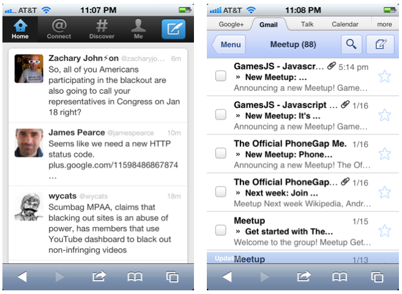

Mobile Web App Stack
-
-
Slides: ido-green.appspot.com
Mobile internet usage to overtake desktop by 2014
Mobile is 95% WebKit

.
Plan / Think about it up-front!
Don't let "web" and "enterprise" be an excuse for poor UX
Be inspired by mobile patterns
e.g. Path, Flipboard, Twitter etc'.
Start with the UX
E.g. Balsamiq

Tablet != Phone != ...
There are many MVC frameworks

<script id="my-template" type=" text/my-template-language">into HTML, with text contents of the template.
is a logic-less templating engine
Example
{{#items}}
{{#link}}<li><a href="{{url}}">{{name}}</a></li>{{/link}}
{{/items}}
+
{"items": [{"name": "green", "link": true, "url": "#Green"},
{"name": "blue", "link": true, "url": "#Blue"}], }
=
<li><a href="#Green">green</a></li>
<li><a href="#Blue">blue</a></li>
Best practice:
#flexbox {
display: box; box-orient: horizontal;
}
#flexbox > p:nth-child(2),
#flexbox > p:nth-child(3) {
box-flex: 1;
}
(!) Caveat: new API just landed, but relatively few changes
.
Use position: fixed;
Use overflow: scroll;
-webkit-overflow-scrolling: touch;
Fingers != mouse. Design for multi-touch!

navigator.onLine & window.(ononline|onoffline)